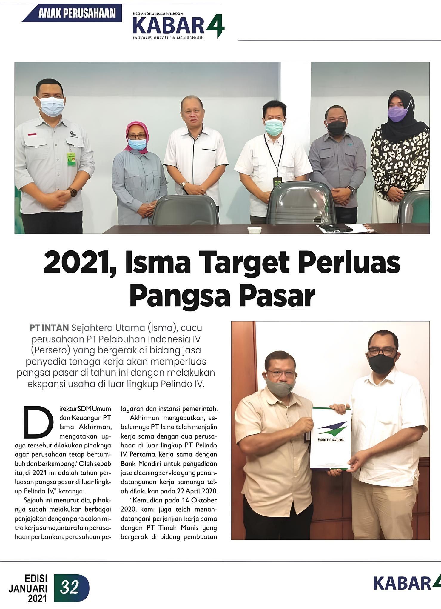

Judul Berita 1
19 Agustus 2025 Tahun 2021, Isma menargetkan untuk memperluas pangsa pasar. Ini berarti Isma berupaya meningkatkan persentase penjualan produk atau layanannya dibandingkan dengan total penjualan di pasar yang sama. Perluasan pangsa pasar ini sejalan dengan upaya untuk mengembangkan bisnis secara keseluruhan, karena peningkatan pangsa pasar biasanya diikuti dengan peningkatan permintaan dan produksi.
Beberapa poin penting terkait target Isma:
- Pangsa Pasar: Pangsa pasar adalah persentase dari total pasar yang dikuasai oleh suatu perusahaan atau produk.
- Perluasan Pangsa Pasar: Tujuannya adalah untuk meningkatkan persentase penjualan Isma dalam pasar yang sama, sehingga bisnisnya menjadi lebih besar dan dominan.
- Tujuan Strategis: Perluasan pangsa pasar adalah strategi umum untuk pertumbuhan bisnis, karena dapat meningkatkan pendapatan, keuntungan, dan daya saing.
- Analisis Pasar: Untuk mencapai target ini, Isma perlu melakukan analisis pasar yang mendalam untuk memahami target konsumen, pesaing, dan tren pasar.
- Target Pasar: Menentukan target pasar yang jelas (demografis, geografis, psikografis) sangat penting untuk efektivitas strategi perluasan pasar.
- Strategi Pemasaran: Isma perlu merancang strategi pemasaran yang tepat untuk menjangkau dan meyakinkan target pasar agar memilih produk atau layanan mereka.
- Pertumbuhan Pasar: Faktor-faktor seperti pertumbuhan populasi, ekonomi, dan perubahan selera pasar juga perlu diperhatikan dalam upaya memperluas pangsa pasar.